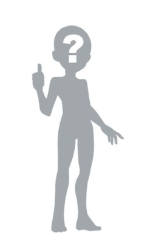

Usuario
🟢 En línea
⭐ Nivel 1
Todavía no escribió una biografía.
⭐ XP
0 XP
🏅 Logros
0
🏆 Ranking
Sin clasificar
📅 Registrado
Desconocido
Información general
Todavía no escribió una biografía.
👥 Actividad de amigos
Actividad reciente de los amigos favoritos de este jugador.
No hay actividad todavía.
📜 Actividad reciente
No hay actividad todavía.
❤️ Juegos favoritos
Todavía no tiene juegos favoritos.
🎮 Últimos jugados
Todavía no jugó ningún juego.
🤝 Amigos
🏅 Logros
🖼️ Avatares guardados
Votá los diseños de avatar que este jugador guardó en su galería.